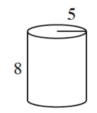
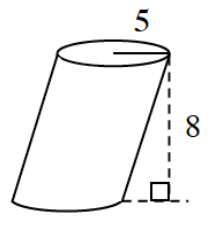

Using what you have learned in this lesson to decide which of the sums below is the largest and which is the smallest.
\(\displaystyle \sum_{n=1}^{\infty}\frac{2}{n}\) \(\displaystyle \sum_{n=1}^{\infty}\frac{1}{n^2}\) \(\displaystyle \sum_{n=1}^{\infty}\frac{1}{2n^2-n}\)
Calculate the surface area and volume of the cylinder shown.

CAVALIERI’S PRINCIPLE
Bonaventura Cavalieri (1598-1647) was a mathematician who helped to develop calculus but is best remembered today for a principle named for him. Cavalieri’s Principle can be applied to calculate the volumes of solids that might be difficult to calculate otherwise.
Suppose you have a stack of \(25\) pennies piled one on top of the other. You decide to slant the stack by sliding some of the pennies over. Does the volume of the \(25\) pennies change because they are no longer stacked one on top of another?
Would the same thing be true of a stack of \(15\) books if you slide the stack to the side or twist some of the books? What about a stack of \(1000\) sheets of paper? Would the volumes change?
The idea of viewing solids as slices that can be moved around without affecting the volume is called Cavalieri’s Principle. Use this principle to calculate the volume of the cylinder shown. Note that when the lateral faces of a prism or cylinder are not perpendicular to its base, the solid is referred to as an oblique cylinder or prism. How is the volume of the prism shown related to the one in problem 12-78?

For the piecewise-defined function below, complete the following problems.
\(f(x)=\begin{cases}-2x+3 & \text{for } -2\le x<2 \\ (x-2)^2-1 & \text{for } 2\le x<5\end{cases}\)
Graph the function. Clearly scale and draw your axes.
Let \(g(x)=f(x+2)-3\). Graph this function, \(g(x)\), and specify its domain.
If a \(7.25\%\) sales tax is charged on any purchase, then the amount of sales tax varies directly as the purchase price.
Express the sales tax \(T\) as a function of the purchase price \(P\).
What are the parts of your algebraic expression for \(T\) and what do they represent in this situation?
James is trying to find the inverse of \(y=|x|\). Audrey says it is \(x=|y|\).
Is Audrey correct? Explain.
Explain why the inverse of \(y=|x|\) is not a function.
How is the graph of \(y=|x|\) related to the graph of its inverse \(x=|y|\)?
Write the inverse of \(y=|x|\) as a function.
A boat traveling due north at \(150\) km/hr is heading directly for a port. The port is exactly \(8\) km away when the captain sees another boat leave the port traveling due east at \(120\) km/hr.
Determine the angle (from due north) that the captain of the first boat needs to position their telescope to watch the second boat. Express your answer in terms of \(t\), the amount of time since the second boat was due north of the first.
If the boat that is traveling north wants to catch the boat that is traveling east, what direction will the boat need to head to catch up to the eastbound boat? How long will this take?
Rewrite the following rational expression as a sum of two fractions with linear denominators by using partial fraction decomposition.
\(\frac{-14x+19}{4x^2-12x+5}\)